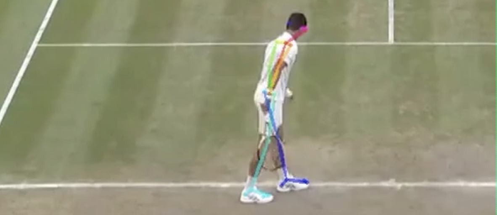

<main>
    <div class="container">
        <div class="row justify-content-center align-items-start">
            <div class="col-md-9">
                <article>
                    <h1>Athlete identification from pose</h1>
                    <p>The <a href="https://acdl-web.mit.edu/">Aerospace Computational Design Laboratory</a> approached The Bridge with an interesting problem: can machine learning be used to improve the automation of stats collection on individual athletes from video footage alone? Current systems struggle with this task due to the complexity of identifying athletes across different lighting conditions, uniforms, and other variables.</p>
                    <p>The Quest Bridge used the open source tool <a href="">OpenPose</a> from CMU's Perceptual Computing Lab to help extract key points representing athletes’ skeletal positions from video recordings of their competitions, in sports including soccer, basketball, and tennis. These skeletal key points were then used to train models that can predict a particular athlete’s identity from just a few seconds of unseen footage.</p>
                    <figure>
                        <p><figcaption style="text-align: center; font-size: smaller">OpenPose skeletal key point estimation for Serbian tennis pro Novak Djokovic</figcaption>
                    </figure>
                    <p>Surprisingly, this pose information is so distinctive that these models can identify players with accuracy approaching standard object recognition models provided with much more information, like athlete hair color and clothing; they can also perform with better-than-chance accuracy on identifying players from video footage taken years prior to the competitions on which they were trained.</p>
                    <p>Beyond automating the gathering of player-specific stats, other applications for the work include helping athletes refine their techniques by isolating the precise moves used in a winning performance.</p>
                    <p>This work was presented at <a href="http://ecss-congress.eu/2019/19/index.php">ECSS 2019</a> and repurposed for a class project in the mechanical engineering course, 2.98 Sports Technology: Engineering & Innovation. We are currently working with sports analysts and athletic teams to further develop the research.</p>
                </article>
            </div>
        </div>
    </div>
</main>